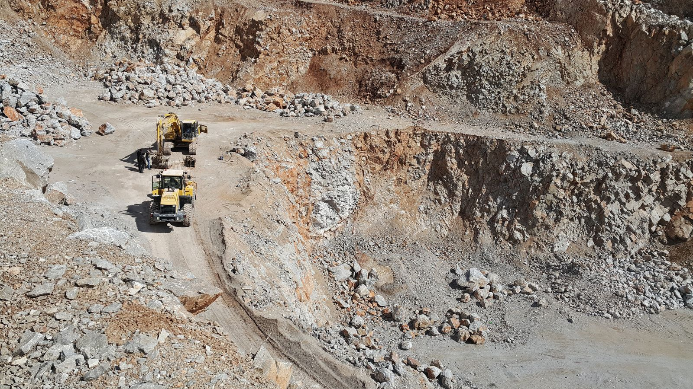

Local knowledge
Deep familiarity with Darra Adam Khel and the coal landscape of KPK keeps every conversation practical.
Coal is black gold — and Khaqan Coal Company Pvt. Ltd. supplies the best-quality coal at competitive rates, with dependable logistics for customers across Pakistan and an export future ahead.
From Darra Adam Khel in Khyber Pakhtunkhwa, Khaqan Coal Company carries a simple promise: make every connection dependable. Our local roots help us understand the terrain, the trade, and the relationships that keep industry moving.
Led by Director Adnan Khan and proudly owned by the Akkhurwal Qom, we are building a company that reflects the character of our home — resilient, welcoming, and always moving forward.
“When a community grows together, every load carries a little more meaning.”— Khaqan Coal Company
Deep familiarity with Darra Adam Khel and the coal landscape of KPK keeps every conversation practical.
We value straightforward communication, honest expectations, and partnerships that last beyond one order.
Our ambition is not only to supply coal, but to help our hometown keep its momentum and its pride.
Darra Adam Khel — 446 square kilometres of Adam Khel Afridi country between Peshawar and Kohat — carries one of Khyber Pakhtunkhwa's great coal stories. Its people stand in five qoms, and Khaqan Coal Company belongs to the one that leads them in coal.
The qom at the top of coal supply in Darra Adam Khel — and ours. From Akhorwal ground, Khaqan Coal Company works its own coal mines and moves some of the most sought-after coal in the country.
One of the five houses of the Adam Khel — kin and neighbours in the valley's coal story.
A pillar of the Adam Khel confederation, part of Darra Adam Khel's trade and craft heritage.
Part of the valley's living network of families, workshops and mine roads.
Together with the other four qoms, completing the Adam Khel of Darra Adam Khel.
A focused supply flow, shaped by local experience and built around the needs of the people we serve.

01 / OriginWe stay close to the ground, working through trusted local relationships and a clear understanding of origin.
 02 / Align
02 / AlignEvery requirement deserves attention. We align the right material, the right details, and the right expectation.
 03 / Destination
03 / DestinationWe keep the handoff clear, coordinated, and focused on keeping our customers moving.
Real mining imagery and compact field footage bring the story closer to the ground. Replace these reference assets with your own Darra Adam Khel photography whenever you are ready.

Management-provided performance highlights from Khaqan Coal Company (Private) Limited.
From the mine and mountain road to rail and onward markets, we are building a distribution story that starts in Khyber Pakhtunkhwa and reaches further.


Khaqan Coal Company is proud to be a leading coal supplier in Pakistan and is now preparing the relationships, standards, and distribution routes needed for export.
Explore supply routesTell us what you need and the Khaqan team will help you take the next step.